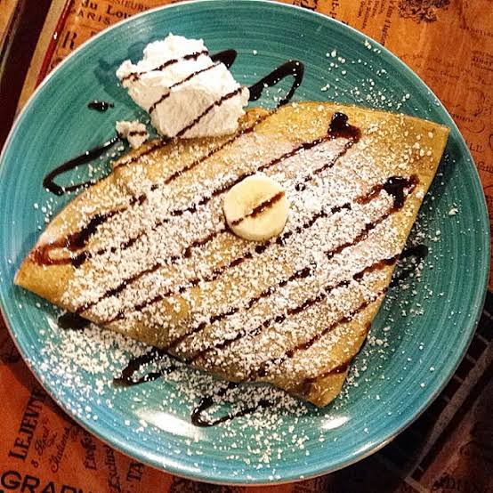
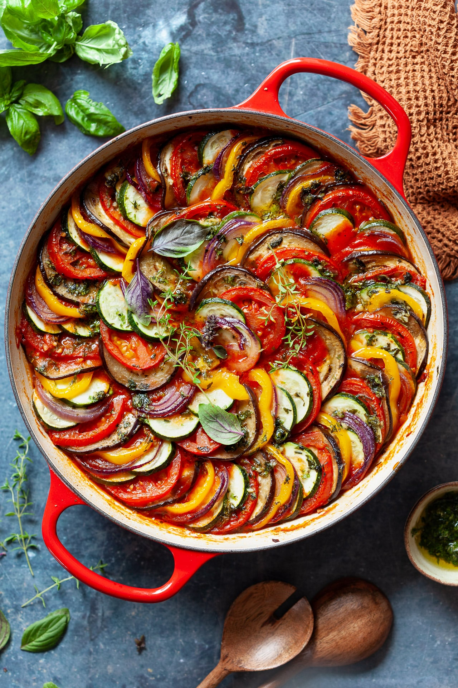
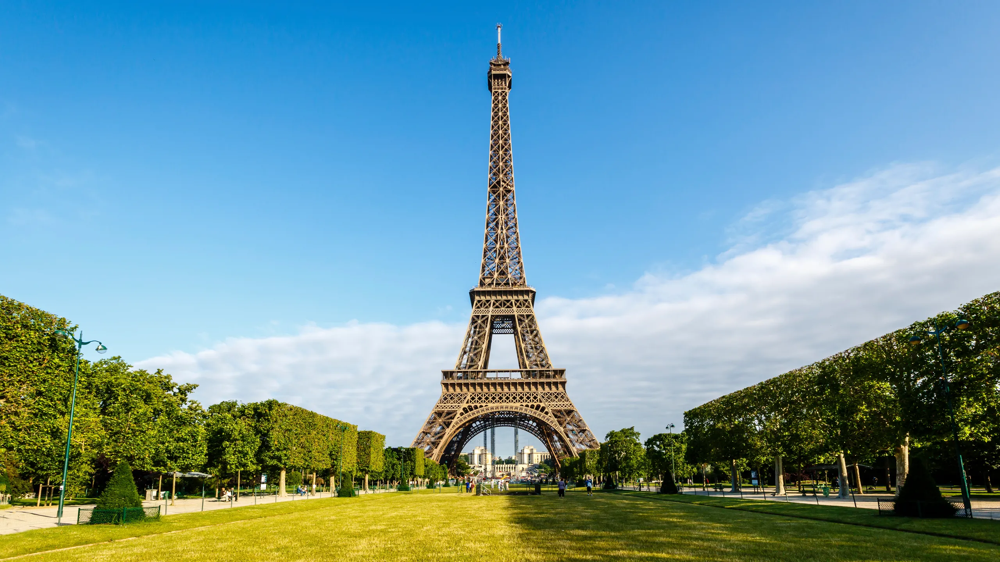
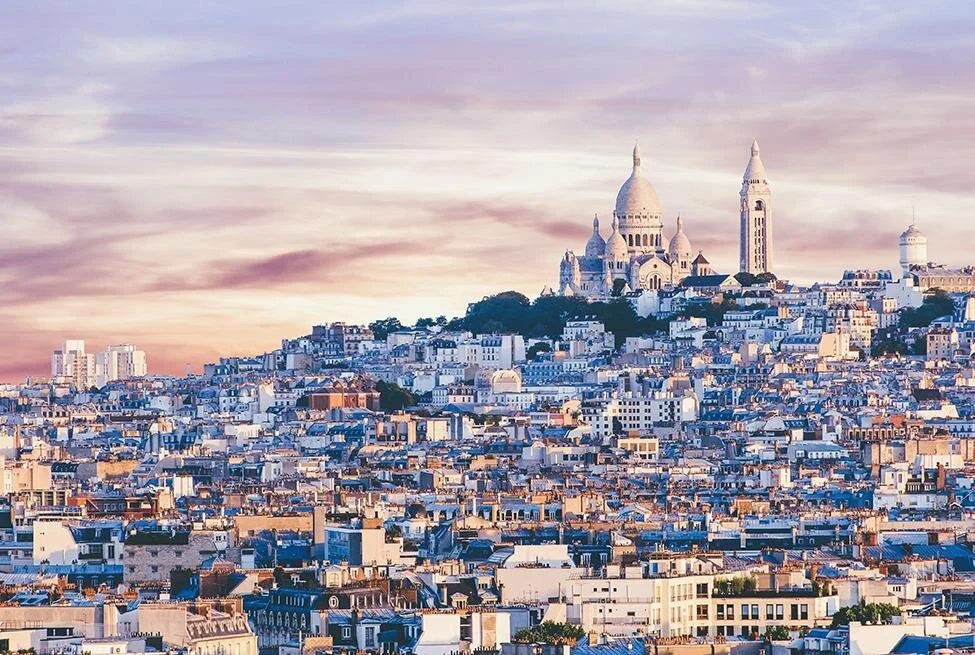

🏛️ A Brief History of Paris
Paris began as a settlement of the Parisii, a Celtic people who lived around the Seine River. The Romans later conquered the area and developed it as Lutetia.
During the Middle Ages, Paris grew into an important political, religious, and cultural center. Landmarks such as Notre-Dame Cathedral were built during this period.
In the 18th century, Paris became a major center of intellectual and political change. The French Revolution began in 1789, transforming France's government and society.
During the 19th century, Paris was dramatically redesigned under Napoleon III and Baron Haussmann, creating the wide boulevards, parks, and distinctive architecture that characterize much of modern Paris.
By the late 19th and early 20th centuries, Paris had become a global center for art, literature, fashion, and culture, attracting artists such as Picasso and writers such as Hemingway.
Today, Paris is the capital of France and remains one of the world's major cultural, artistic, fashion, and tourism destinations.
💗 Why Paris?
Paris isn't just a destination. It's a feeling — art in the streets, cafés around every corner, historic buildings, delicious food and unforgettable evenings.
🥐 Paris Famous Food

1. Croissant — La Maison d'Isabelle
📍 Location: 47ter Boulevard Saint-Germain, 5th arrondissement
⭐ Rating: 4.5/5
💶 Price: €1–10
🍴 Try: Butter croissant, baguettes & pastries
Click the food name above to discover its history, famous places and travel tips →

2. Crêpes — Crêperie Parisienne
📍 Location: 18 Quai du Louvre, 1st arrondissement
⭐ Rating: 4.6/5
🍓 Try: Nutella crêpe, caramel crêpe or a savory buckwheat galette.
Click the food name above to discover its history, famous places and travel tips →

3. Traditional French Food — La Jacobine
📍 Location: 59–61 Rue Saint-André des Arts, 6th arrondissement
⭐ Rating: 4.6/5
💶 Price: €20–30
A popular French restaurant offering traditional French-style dishes in a historic Parisian setting.
Click the food name above to discover its history, famous places and travel tips →
🗼 Top Places to Visit in Paris

1. Eiffel Tower
📍 Location: Champ de Mars
✨ Why visit: The iconic symbol of Paris offering spectacular views of the city.
⏱️ Recommended: 2–3 hours
💡 Tip: Visit around sunset for both daytime and evening views.

2. Louvre Museum
📍 Location: 1st Arrondissement
✨ Why visit: One of the world's largest and most famous museums, home to the Mona Lisa and thousands of artworks.
⏱️ Recommended: 3–4 hours
💡 Tip: Plan the galleries you want to see before arriving.
3. Notre-Dame Cathedral
📍 Location: Île de la Cité
✨ Why visit: A masterpiece of Gothic architecture with centuries of history at the heart of Paris.
⏱️ Recommended: 1–2 hours
💡 Tip: Combine it with a walk around Île de la Cité.
4. Arc de Triomphe
📍 Location: Place Charles de Gaulle
✨ Why visit: One of Paris's most recognizable monuments, standing at the western end of the Champs-Élysées.
⏱️ Recommended: 1–1.5 hours
💡 Tip: Climb to the top for views of Paris's famous avenues.

5. Sacré-Cœur Basilica
📍 Location: Montmartre
✨ Why visit: A striking white basilica situated on one of the highest points in Paris, with panoramic city views.
⏱️ Recommended: 1–2 hours
💡 Tip: Explore the surrounding Montmartre streets afterward.

6. Montmartre
📍 Location: 18th Arrondissement
✨ Why visit: A historic neighborhood famous for its artists, cafés, cobblestone streets and bohemian atmosphere.
⏱️ Recommended: 2–4 hours
💡 Tip: Don't rush—walking through the smaller streets is part of the experience.

7. Palace of Versailles
📍 Location: Versailles, outside central Paris
✨ Why visit: The spectacular former royal residence known for its grand interiors, Hall of Mirrors and extensive gardens.
⏱️ Recommended: Full day
💡 Tip: Reserve a full day for the palace and gardens.

8. Musée d'Orsay
📍 Location: Left Bank, 7th Arrondissement
✨ Why visit: A renowned museum featuring Impressionist and Post-Impressionist masterpieces in a former railway station.
⏱️ Recommended: 2–3 hours
💡 Tip: Great choice if you love Monet, Renoir, Van Gogh or other 19th-century artists.

9. Seine River
📍 Location: Central Paris
✨ Why visit: Walk along the riverbanks or take a cruise while seeing famous Paris landmarks from the water.
⏱️ Recommended: 1–3 hours
💡 Tip: An evening cruise gives you a different perspective of illuminated Paris.